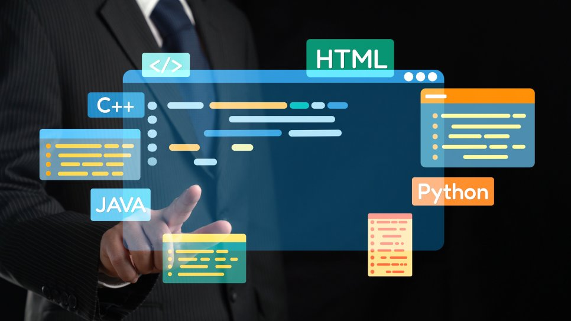
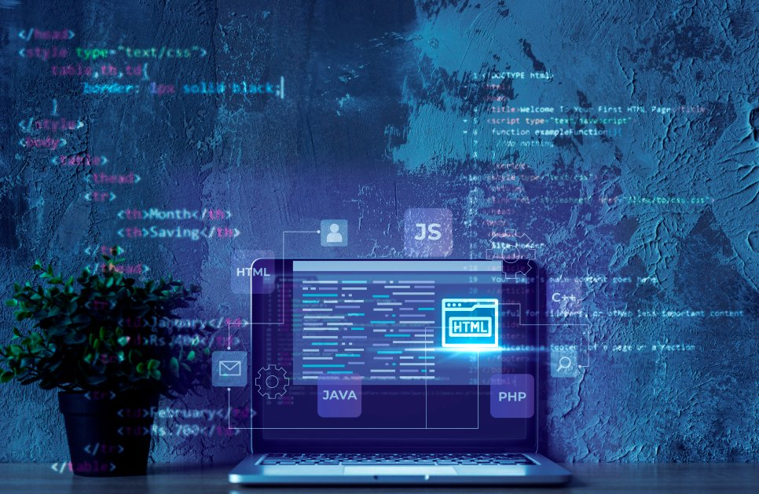

If today’s rapidly evolving tech and business landscape has taught us anything it's that web development is here to stay. I know what you’re thinking, how can that be when mobile technologies have evolved so much? It is true that the last decade has seen some significant changes in mobile technologies and smartphones are everywhere. It’s only natural to assume that mobile apps are the way to go.
However, in reality web technologies are more advanced than ever, the cloud is dominating all aspects of business and emerging technologies and trends like AI/ML and blockchain practically live through web applications. So, I think it’s safe to say that web development is here to stay and businesses are launching web applications more than ever.
With that said, we’re not just here to brush over any topics. In this blog, we will go through the future of developing products for the web, what kind of trends you can expect creeping into 2026 and how you can benefit from it.
So, let’s jump in.
Exploring The Future of Web Development: Exciting Trends in 2026
I think I’ll address the elephant in the room first, AI. Because whether you like it or not AI is everywhere and this trend will probably continue to dominate in every industry it can. Web development is crucial for AI because of the complexities in running AI and ML models. Today, most AI software resides on the web and even mobile applications do not run the AI models on the devices. You need significant computing power from GPUs to run these models and you can only do that on the cloud.
Now, pivoting a little bit when you talk about web development there are many aspects you need to factor in. Technology is one of them but another major aspect is User Experience Design or UX. User Experience Design for web development is absolutely essential but it is also something that most people overlook when building their applications. Truth be told, the word unique in the tech world may not be as straightforward as it might seem. You can build the greatest app ever but unless your product is proprietary many others will soon follow in your footsteps.
What will help you stand out and into the hands of real world users is the user experience design. If you think about the everyday user they don’t care about how hard or high quality your web development process was. A user just wants to use your application to solve problems that they have and the key to retaining users is to have a good user experience by following modern UX trends for web development. This is why you will see a lot of people talking about different user experience trends when the conversation comes to web apps.
Now, let’s dive a little deeper into the topic and see the different aspects, trends and everything in between that you need to know before launching your own web application.
We’ll start with the basics.
Firstly, What is web development? - The Basics
Web development is the process of creating and maintaining applications for the web. This could be websites and applications. Realistically, a web app is essentially a website with advanced functionalities that you can use to carry out different tasks and solve problems. On the other hand, you can call it a web application because you access it through a web browser and use its functionalities just like any other app. The difference is that websites are like real estate on the internet. You use them to share information and to interact with users who in most cases will be potential customers. Whereas in web development for applications you are giving your users a tool to solve their problems.
To summarize, you can refer to anything you build that users can use over the internet by searching your domain name or link which may include websites and applications.
A Brief Look Into What Are the Types of Web development
Now that we’ve had a brief look into what developing programs for the web is about, let's take a closer look into the different types of web development.
There are majorly two kinds that you need to know about:
- Frontend Development
- Backend Development
Frontend Development
Simply put, frontend development is the process of creating a user interface. Now, you could ask “isn’t the UI/UX designer the one who creates the user interface?” That is indeed a good query because yes UI designers first create the visual designs for your website or app and the engineer recreates it using code. The designs are more or less like the sketches you create when you’re trying to build a machine. On the other hand, web development is the process of building the machine itself. In our machinery analogy if you want to build a machine you first need to plan everything beforehand before you build. Because even the most experienced of engineers can only implement something by first having a plan to do so. Once you have a sketch to work with which includes the different parts of the machine and things you need to forge it's easier for technicians to build it.
Frontend is not different, you’re creating a visual representation of the product or website through design. And then through web development you implement code and technology to actually build an application or website. So naturally your frontend is one of the most important parts of your product.
Now, when you look at why your frontend is so important the answer should be obvious because your frontend is what your users interact with and even see the first time they open your website or application. It's the interface that your users can use to accomplish their needs while the backend takes care of the computational aspects. You can always create programs and use it only through code if you know web development but if you want your users to be able to access your application then you need a solid frontend.
There are many web development frameworks, libraries and technologies you can use to develop your frontend and I’ll list some below. And for those of you who are new to the jargon, frameworks and libraries are just standards and additional resources you can use to achieve certain functionality. If you take JavaScript as an example, it is a programming language you can use to create websites and web apps. A framework on the other hand is an environment that has certain standards and patterns that help you build certain things. In web development if you want to achieve a specific result you can use JavaScript and write your code by following the standards and patterns required.

Frontend Frameworks & Technologies
- HTML (language)
- CSS (language)
- JavaScript (language)
- Bootstrap (A framework for HTML)
- Angular (A framework)
- React.js (library)
Backend Development
The backend is where all the magic happens and where your application gets its functionality. For example, if you’re building a calculator application the buttons a user clicks on is part of the frontend and you can see it. It’s meant to mimic real life buttons. However, your backend in web development facilitates the actual working of your calculator including the calculations. If we put this in the form of an analogy you can say that your wristwatch’s dial and needles are the frontend and the internal parts of the wristwatch (movement) is the backend. You can see and tell the time when you look at the dial and needles but the actual functioning of the wristwatch happens through the movement.
The term web development framework comes into play here because just like the frontend part of web development you can write code using multiple languages including JavaScript. However, you have the flexibility to create amazing and trending functionalities through specific frameworks and tools available for backend development.
The backend in many ways is where the magic happens because the job of the backend is to make sure that your user gets everything they need without worrying about what happens behind the scenes. They can simply use a visual interface to interact with but the backend works in the background to facilitate various features and actions.
In web development, you also need other smaller programs like APIs to facilitate the functionalities especially to connect your frontend with your backend but as a whole your frontend and backend combine to create an application.

Backend Frameworks & Technologies
- PHP (language)
- Java (language)
- Python (language)
- Node.js (runtime environment)
The Rise of Progressive Web Apps in Modern Web Development
Progressive Web Apps (PWAs) are reshaping how users interact with the web by blending the speed of a website with the smooth experience of a native app. They load fast, work offline, and offer mandatory features like home screen installation and push notifications, making them a more powerful choice for nice brands that aim to boost engagement without the need to build separate mobile apps.
In recent days, businesses are looking for scalable and cost-friendly solutions, and PWAs are becoming the core part of the future web development. Their reliability across multiple devices, boosted performance through caching, and the ability to deliver app-like experiences make them one of the most impactful trends which drive the next era of the web.
Discover The Future Trends of web development And What You Should Know
Let’s address the obvious that most of you are thinking about first which is AI and yes AI is going to be a huge trend coming into 2026. AI is already a trend and if you look at the sheer volume of startups launching products you can be assured that it is only going to grow in web development. With that said, experts have the opinion that 2026 and moving forward we’re going to be putting a lot of emphasis on user experience. The reality is that the days of intriguing people with flashy tech is over because everyone has access to the internet and smartphones now and it’s not that difficult to use the latest trending tools.
However, because of how much mobile technologies have grown and with fast internet speeds more and more people are using websites and web applications on their mobile phones. This makes your web app’s user experience the need of the hour and web development is going to steer towards including great user experience. When I say user experience we’re not just talking about visual designs for user interfaces but the entire user journey and even the minute things that your users interact with. Founders are also investing budgets into user experience and with inflation you can expect your web development cost to increase in 2026.
It is also worth noting that blockchain technology practically lives on the web and most decentralized platforms are on the web. AI has been here for a long time and even before generative AI was a trend we use systems everyday with AI in the background. However, blockchain technology is quite new and from a web development perspective most people in the space are used to using wallets and decentralized applications on their web browsers. We will definitely see more and more web developers and web development agencies switching to the blockchain scene because now the market is slowly moving away from the “hype” stage and moving towards a future where functionality and community are at the center.
What is the future of web development with AI in the rapid tech landscape
Artificial Intelligence has come a long way over the years and in the past few years it has practically dominated the tech space with trending applications like image generators and LLMs like ChatGPT. Web development plays a big role in AI because most AI solutions work on the cloud. It’s no secret that it takes a lot of GPU computing power to run AI and ML models. However, you can’t say that everyone who uses AI will have a great machine on their hands. The only solution to this is the cloud, especially when it comes to using AI for business.
Now, when you look at the other side of the coin, AI brings a boat load of benefits for web development as well. Today, there’s an AI tool for just about anything which includes building websites. From the essential wireframing of your websites and web applications to writing code for building it you can use AI to rapidly increase the speed of your development process and even generate the necessary graphics.
But now there’s a question just swimming inside your head “do you really need a developer for building products on the web?” The answer is of course yes. The reason is that you don’t hire a web developer or web development agencies because you need a person to write your code looking at an AI chat box window. You get them onboard because of the experience they bring. While AI tools are capable of writing code and optimizing your development process it is not completely hands free. If you’ve tried to code using an LLM before you’ll understand that their outputs are not 100% accurate.
In fact you still need a developer who understands web technologies and the latest trending practices properly if you want your products to be high quality. Additionally, AI tools can optimize your development process but you need someone who understands the nuances of web development because bugs and issues can be quite a pain sometimes. Even if you have an LLM your development process will be much easier if you have someone who knows web technologies and how they work.
What is the trend in web development in 2026 For Successful Applications
When you have a conversation about trends user experience is a recurring subject and for good reason. There was a time in the beginning where you could impress users with utility and advanced trending features but those days are gone. User experience or UX is the biggest trend in web development and of course the undeniable AI.
Top 5 Web Development Trends
1. Adoption of AI-Powered Development Tools
As you’re reading this blog developers out there are already completing their tasks quicker with AI. ChatGPT is pretty much a household name now and powerful Large Language Models or LLMs like this are changing the way developers build web applications. It is also worth noting that most code editors now have AI Copilot which means that developers have instant access to the power of LLMs and they can troubleshoot problems much easier than before. Additionally, the support of AI is not just for web development but also for streamlining day to day activities that you can automate. Many web development agencies have now decided to integrate AI into their workflow which should show you that the market demand for AI powered development is high.
2. Augmented Reality
If you thought that augmented reality was just a trend for niche applications, then you’re in for a big surprise in 2026. Most people associate augmented reality with cool mobile applications that merge the real world and the digital world. However, augmented reality is fast becoming a key part of user experience design and will be more prominent moving forward. e-Commerce brands, for example, have welcomed this trend and introduced virtual try-ons on their website, and the great thing about it is that it works. Web development is probably not what you think about when you have a conversation about augmented reality. But things like virtual try-ons give augmented reality immense value in the real world because your customers can get a pseudo-tactile experience even when shopping online. AR is now penetrating into multiple industries like real estate, retail and education.
3. Cybersecurity For Web Applications
Security is an undeniable aspect when building your web applications and it's pretty much open season for hackers and malicious actors if your security is not proper. In the past few years in web development we can see a steady rise in app creators implementing 2-Factor Authentication/Multi-Factor Authentication into their apps. Since we pretty much use the web for everything today from booking flight tickets to managing our financial portfolios, security is absolutely an essential checklist to have when you’re building web applications.
4. Web3 And Decentralization
Web3 and decentralized technologies are redefining the way we interact with the internet. Blockchain as a whole will play a great role in the days to come when it comes to ensuring transparency, security and also to give users the control of their data in web development. Although it started to gain popularity because of cryptocurrencies, Web3 is much more than a temporary trend or just creating and handling digital assets. It makes things like authentication to be highly secure and the blockchain space as a whole is moving towards great user experience which is one of the major barriers to its growth at the moment. More web developers have to adapt to Web3 technologies because more and more web applications will integrate blockchain for its amazing benefits. Web development agencies have already joined the bandwagon and there is still a shortage of good Web3 developers in the market right now.
5. Voice User Interface
When I said that user experience is king, I wasn’t lying, and you can see that with the trends that we see in developing products for the web. Voice-activated systems are becoming more and more common these days, and we’re not just talking about setting your calendars or picking up calls. Moving forward, Voice User Interfaces will allow users to do just about anything. The web development space is adapting to this change in mindset, and already, many businesses have integrated voice as a feature into their applications for tasks such as searching the database. This trend will continue to be even stronger in 2026, and you shouldn’t be surprised if you see someone booking a complete vacation just by using their voice.
A Deep Dive Into The Benefits of Web Development For Businesses
Creating a web app has a lot of benefits for businesses because of the accessibility. Anyone can easily use your app through their web browsers. Even with the rapid adoption of smartphones globally people still turn to their web browsers whenever they need something. Web development allows you to easily launch your app without having to worry about different devices and operating systems. On the other hand users have to install mobile applications on their mobile phones and people are really picky about what they install on their devices. This is why it is very beneficial to launch your MVP as a web application if you can because it offers a quicker way for you to enter the market with your product.
There’s another perspective that we can consider which is the ease of maintaining and rolling out updates in web development. Unless you have a hybrid mobile app users have to download and install updates each time they want to access the new version of the app. Most people do not bother with updates in their everyday lives because of other priorities and it gets to a point sometimes where the app is no longer functional unless you upgrade. With web applications you can simply roll out the updates continuously according to the latest trends through CI/CD and the user doesn’t even have to know about it. It might be surprising but one of the major benefits of web development is that you can give users a seamless experience like this.
Let’s Rewind And Summarize The Future Trends of Web Development in 2026
In 2026, more and more buildings are likely to go the web app route and we will probably see more developers adapting to trending technologies like AI and blockchain. Blockchain specifically will see a big increase in the talent pool as businesses start transitioning from Web2 to Web3. Even web development agencies are jumping on the bandwagon and increasing their capabilities in blockchain and artificial intelligence. The future of web development seems bright and this is the right time to bring your web app ideas to life.
That’s all we have for you in this blog but I’m sure that you now have a good idea of what kind of different trends you can expect in the world of web development moving into 2026.
CO-Founder
Yokesh Sankar, Co-Founder and Chief Operating Officer of Sparkout Tech Solutions, leverages his expertise to drive innovation and operational excellence in the software industry. Passionate about empowering individuals with essential skills, he uses technology to streamline business processes and enhance efficiency. He advocates for AI and blockchain adoption, helping businesses integrate these technologies seamlessly into their operations. Staying ahead of AI trends, Yokesh explores industry applications and shares insights to foster growth and knowledge in the tech sector.